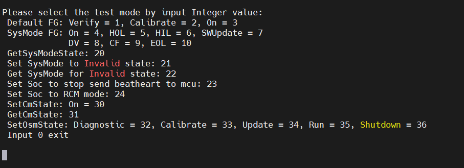

How to test xcalib-prod on bench
Step1: Brush
Copy the Daily Build you need to local, and then copy the .zip to the table/cache/update/asw/directory by SCP
daily build released link: PI2306 SW Internal Release - wave 3 development - Docupedia (bosch.com)Declaim file: unzip xxx.zip -d PATH_TO_SAVE_UNZIPPED_FILES
IF needs to test the code compiled locally:
-Calibration Zicang: Replace the compiled OfficeCalibration_Activity to to PATH_TO_SAVE_UNZIPPED_FILES /output/bin/lower
-XCALIB-PROD algorithm module: will be compiled well libofflinecalib.so Replace PATH_TO_SAVE_UNZIPPED_FILES /output/bin/lib/and path_to_save_unzipped_files/output/lib_w3/perception/below
*Use CHMOD A+X to change the file permissions after replacing the file
Step2: Modify the configuration file
Preparation of front items:
method one : Copy the calibration_config.yaml in the unzipped package to/data/call, and then modify the /data/calib/calibration_config.yamlcp ./package/perception/offline_calibration/config/calibration_config.yaml /data/calib/calibration_config.yaml
Two ways : Make sure that there is no call_config.yaml in the/data/call/call/cat, and then modify the.reason
In the decompressive software package, the corresponding version of the configuration file has been integrated :/ Package/Perception/Office_CALIBTION/Config/ calibration_config.yaml
However, in order to facilitate the vehicle terminal debugging (if you release it to the customer software, you will be brushed to the read -only partition, and you cannot change the configuration file according to the debugging needs). There is a mechanism for calibrating the module, that is, when reading the config file, it is to read the Config file. /data/calib/ calibration_config.yaml Priority is greater than . /package/perception/offline_calibration/config/ calibration_config.yaml
In other words, there are configuration files in the IF/Data/Calib/directory, so you need to change the config file in the directory to take effect.Therefore, the above two methods are to ensure that the Config version is consistent with the software version and can make effective changes.
According to the method of the previous step, determine the configuration file to be modified, and make corresponding changes according to the needs of this test:
if Test_on_bench is set to true Then you need to store the folder that stores the calibration data chery_sim_data Copy PATH_TO_SAVE_UNZIPPED_FILES /output/package/perception/offline_calibration/
File download address: \ \ bosch.com\dfsrb\DfsCN\DIV\XC\Engineering\domain\WAVE3\00_DataExchange\to_zian\bench_test\offline_calibration\chery_sim_data
Step3: Start the calibration process
Method 1: Start through the script
cd PATH_TO_SAVE_UNZIPPED_FILES /output/
./start_calibration.sh
*The default log level is 4, if the information about the output log_info needs to be PATH_TO_SAVE_UNZIPPED_FILES /OUTPUT/BOOT_CALIBTION.Open a new window and enter PS to see if the 6 required processes are needed:
Method 2: Start the script and pull the calibration process through the ESME startup script.
First of all, make sure that it is currently in the factory mode:
View the current SOC mode through cat /log/bsw/lcm.log
The two places displayed in these two places are 0N, so the current ECU is in the NORMAL mode, so you needexport LD_LIBRARY_PATH=/opt/vrte/lib:$LD_LIBRARY_PATH/opt/app/rcmtool/bin/Exe_RcmTool
After the content of the above figure appears in Terminal, enter 9 and then restart the tablet.
After restarting, at this time, at View The Current Soc Mode Through Cat /log/bsw/lcm.log, you will find that the Socmode of Master and Slave has become CFThe input instructions pull up the relevant process through ESME:
LD_LIBRARY_PATH=/opt/vrte/lib:$LD_LIBRARY_PATH LOG_LEVEL=2 ASW_PATH=PATH_TO_SAVE_UNZIPPED_FILES/output/ PATH_TO_SAVE_UNZIPPED_FILES/output/bin/esme -f PATH_TO_SAVE_UNZIPPED_FILES/output/yaaac_codegen/carma_0_22_deploy/DualOrinMaster/DualOrinMaster_esme.json -p TRUE
Step4: Trigger the calibration by diagnostic instructions (when SKIP_DIAGNOSE_SIGNAL is placed as false)
Specific operation steps View: How to trigger offline calibration by diagnose signal on bench
Step5: View the calibration results
Use cat /log/aos/master/calibration_activity.log to view results
View the calibration status of each sensor: search routine_id: 0x4081 - EOL_CALIBRATION
View FaultEvent: Search EFaultEventId
View error code: Search calib errors
How to remotely reboot bench
export LD_LIBRARY_PATH=/opt/vrte/lib:$LD_LIBRARY_PATH/opt/app/rcmtool/bin/Exe_RcmTool
After the content appears in the above figure, enter 40, and after a period of time, the restart will be completed
Trouble Shooting
After starting the calibration process, there is no crash, but the log is printed only a few lines
Inspection ideas: confirm whether the camera is connected well.The IF camera is not connected, and the system does not call the onInit function in the calibration module. Therefore, the calibration module has not been initialized. It has been in a PENDING state, and the above problems will occur.Use the three instructions below to confirm whether the camera has been connected:#Front+Rearnvsipl_camera -c"CHERY_E03-B0"-m"0x0111 0x0000 0x0000 0x0000"--enableRawOutput --showfps --camRecCfg1#wing camnvsipl_camera -c"CHERY_E03-B0"-m"0x0000 0x1111 0x0000 0x0000"--enableRawOutput --showfps --camRecCfg1#fish eye camnvsipl_camera -c"CHERY_E03-B0"-m"0x0000 0x0000 0x1111 0x0000"--enableRawOutput --disableISP0Output --disableISP1Output --disableISP2Output --showfps --camRecCfg1After the tablet restarted, the calibration process was not started through the calibration script, but when I entered PS or Pidin AR, I saw that 7 processes had been pulled up:
Solution: ESME is caused by starting from the start of the script, and then restarts the tablet/asw/esme_switch.sh -f